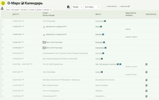
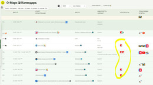
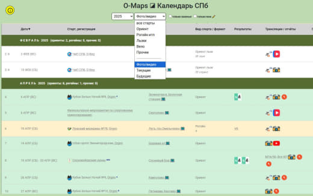
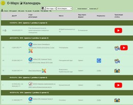
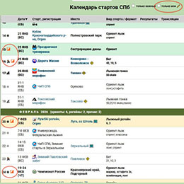
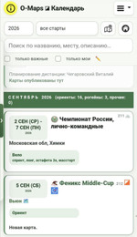
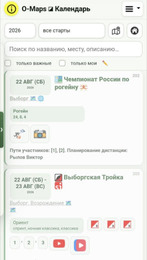
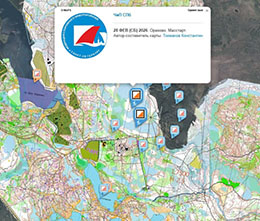
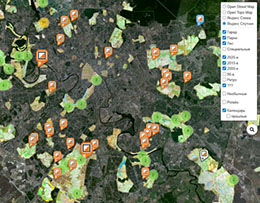

Общее описание

- Санкт-Петербург и Ленинградская область - самый подробный. В нём собраны старты начиная с 2004 года, а также ранние (до 2004 года, начиная с 1963), восстановленные по картам и документам каталога.
- Москва.
- Самара.
- Главные старты - только важные соревнования (чемпионаты, кубки, крупные многодневки).
- Лыжные гонки - отдельный календарь, о нём ниже.
Календарь - это таблица, разбитая по месяцам. В строке-заголовке каждого месяца указано количество ориентов, рогейнов и прочих стартов в нём. Прошедшие старты показаны бледнее, ближайшие (в пределах недели) - выделены, отменённые - помечены. При открытии страница сама прокручивается к текущей дате. Над таблицей показана общая статистика: сколько всего стартов и сколько из них ориент, вело, лыжи, рогейн и прочие.
Таблицу можно отсортировать по дате, названию старта или месту проведения, щёлкнув по заголовку соответствующей колонки,
а кнопкой  - скачать в виде CSV-файла.
- скачать в виде CSV-файла.
Календарём Петербурга можно пользоваться и в Android-приложении.
Колонки таблицы
- Номер - порядковый номер старта в году. Рядом может стоять значок вида спорта (🏃 бег, ⛷ лыжная гонка, ❄ лыжное ориентирование, 🚲 вело, 🚣 водный, 🏠 в помещении) и значок 💰, если участие платное.
- Дата - день или диапазон дней проведения.
- Старт, регистрация - название (ссылка на страницу соревнований или на O-Site), логотип, ссылки на регистрацию. Пометка «закрытый» означает старт не для всех.
- Место - место проведения. Значок 🗺️ открывает карту старта на O-Maps, 🌐 - точку проведения на карте, 🚸 - трек маршрута.
- Вид спорта, формат - ориент, рогейн, вело, лыжи, мульти и т.д., а также формат старта (спринт, лонг, эстафета...).

Результаты - ссылки на протоколы (Orgeo, O-Site, O-Time, Sportident, Reskeep и др.), сплиты и анализ сплитов Reskeep.- Трансляции, отчёты - GPS-трансляции, фото- и видеоотчёты.
- Прочее - дополнительная информация, планировщики дистанций и ссылки на публикации карт с дистанциями.
Фильтры и поиск
 
- Год - конкретный год, «Ранние» или «Все годы».
- Вид стартов - все, Ориент, Рогейн итп, Лыжи, Вело, Прочее. Ниже разделителя - особые выборки: «Фото/видео» (только старты со ссылками на фото или видео), «Текущие» (ближайшая неделя, для рогейнов - четыре недели) и «Будущие».
Кнопка с лупой открывает строку поиска (её же можно вызвать клавишей «/»). Введите любые слова - в таблице останутся только строки, содержащие их все, в любом порядке и в любой колонке. Регистр и различие «е/ё» не важны. Enter применяет фильтр сразу, Esc - очищает и закрывает поиск. Такой же поиск есть во всех табличных страницах сайта.
Кнопка «На карте»  в заголовке открывает календарь на карте
с теми же фильтрами, что выбраны в таблице.
в заголовке открывает календарь на карте
с теми же фильтрами, что выбраны в таблице.
Важные и «мои» старты
Галочка «только важные» оставляет в таблице лишь главные старты сезона. Важные старты всегда выделены в таблице.

Состояние этих галочек и список «моих» стартов хранятся в Вашем браузере: на другом устройстве или в другом браузере их придётся отметить заново.
Календарь на телефоне
 
Верхняя панель с фильтрами прячется при прокрутке вниз и появляется при прокрутке вверх. Кнопка-булавка в заголовке закрепляет её на экране. Кнопка-стрелка в левом нижнем углу возвращает к началу страницы.
Мобильный или настольный вид выбирается один раз при загрузке страницы по ширине экрана. Принудительно выбрать вид можно параметром mobile.
Календарь на карте
 
За маркеры отвечает слой «Календарь» в переключателе слоёв. Прошедшие старты по умолчанию скрыты, их можно включить галочкой «прошлые».
Календарь лыжных гонок
Календарь лыжных гонок устроен так же, как основной, но колонок в нём меньше: дата, старт и регистрация, место, дистанция. Вместо вида спорта в фильтре выбирается место проведения (СПб, Выборг, Гарболово, Гатчина, Дудергоф, Зеленогорск, Орехово, Пушкин, Токсово, не Питер), а также «Текущие» и «Будущие». Кнопка «На карте» ведёт на страницу маршрутов.
Параметры запуска
Как и страницы с картами, календари можно открыть с заранее заданными фильтрами:
| Параметр | Описание | Пример использования |
|---|---|---|
| startYear | Год стартов. Особые значения: ALL - все годы, EARLY - ранние старты (до 2004 г.). | https://o-maps.spb.ru/calendar.html?startYear=2025 |
| calendar | Вид стартов: ORIENT, ROGAINE, SKI, VELO, OTHER, а также media (есть фото/видео), actual (текущие), future (будущие). Можно указать и код соревнования или организатора. На страницах с картами этот же параметр включает слой календаря. | https://o-maps.spb.ru/calendar.html?calendar=ROGAINE |
| start | Только старты указанного соревнования (многодневки, серии). Значение major - только важные старты. | https://o-maps.spb.ru/calendar.html?startYear=ALL&start=RUSSIA_CHAMP |
| owner | Только старты указанного организатора. | https://o-maps.spb.ru/calendar-msk.html?owner=MLKHT |
| q | Строка поиска, которая будет сразу применена к таблице. | https://o-maps.spb.ru/calendar.html?q=токсово |
| mobile | Принудительный выбор вида: mobile или mobile=1 - карточки, mobile=0 - обычная таблица. | https://o-maps.spb.ru/calendar.html?mobile |